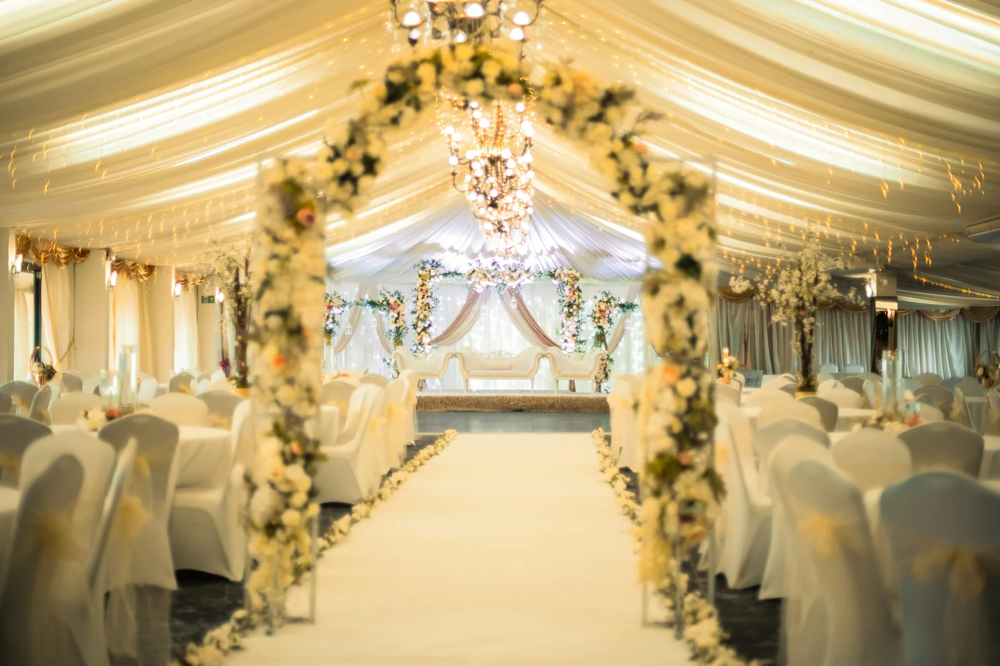
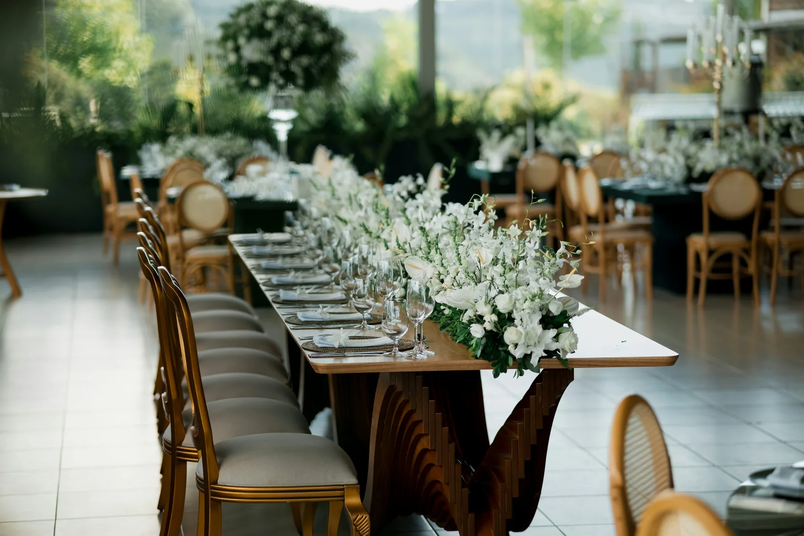
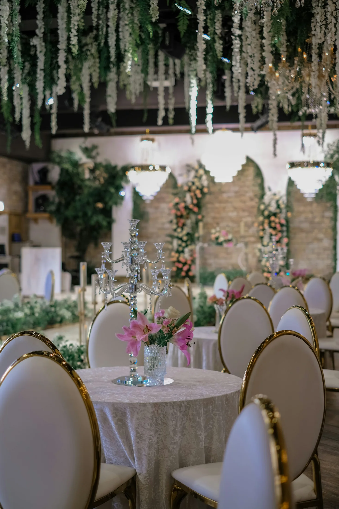
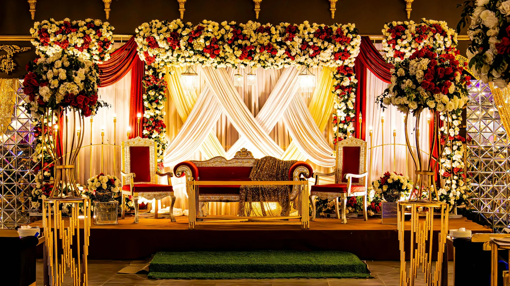
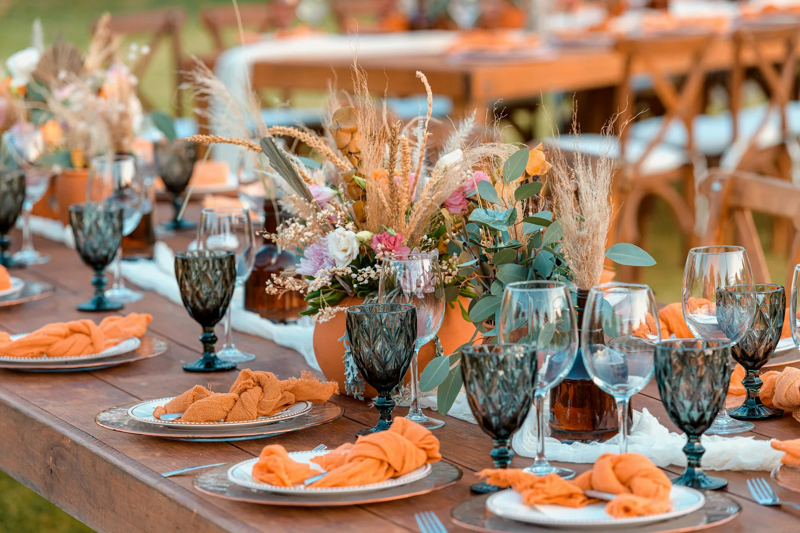
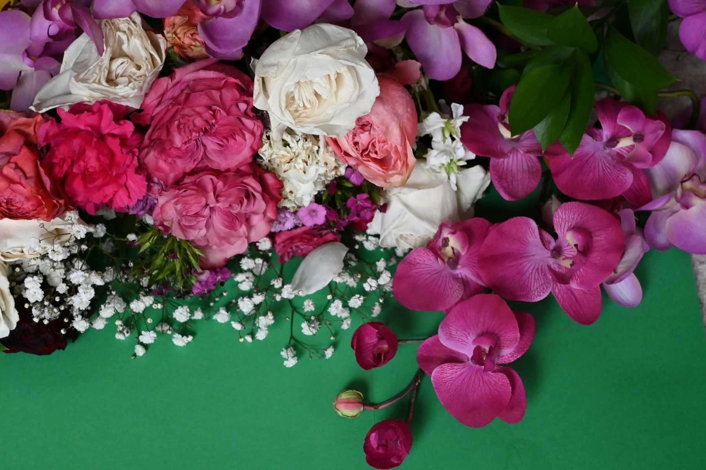

WEDDING DÉCOR & EVENT STYLING · CARDIFF
For the
moments
that matter.
Every celebration begins with a feeling.
Let’s find yours—and make room
for a little magic.


01 / FIRST, A FEELING
You bring the love.
We'll bring the magic.
Maybe it’s the hush before your Nikkah. Maybe it’s a Mehndi alive with colour. Before we talk about flowers or fabrics, tell us how you want your celebration to feel.
Find your feeling02 / THAT FEELING, IN COLOUR
What's your
kind of beautiful?
Now picture the scene.
Which look feels like you?
STAGES · WALIMA · RECEPTIONS
Ivory.
Candlelight.
A little poetry.
Soft florals, warm gold and a room that glows. Romantic styling for the moments you want to hold on to.
Explore wedding décor
MEHNDI · PRE-WEDDING CELEBRATIONS
More colour.
More joy.
All your people.
Rich florals, playful details and a setting full of life. A joyful expression of the traditions you love.
Explore Mehndi décor
NIKKAH · CEREMONIES · ENGAGEMENTS
Softly.
Simply.
Beautifully yours.
A thoughtful backdrop for the words that matter. Soft textures, graceful flowers and space for a meaningful beginning.
Explore Nikkah décorPhotography selected for styling inspiration.
See our gallery03 / THE DETAILS FOLLOW
Nothing ordinary.
Every detail yours.
Once you find a feeling, the little things follow. Flowers to frame your entrance. Candlelight at your table. A backdrop for that first photograph. Each detail becomes part of your story.
01 / A BEAUTIFUL BEGINNING
The setting.

02 / CONSIDERED TOGETHER
The little things.

03 / YOUR OWN EXPRESSION
The feeling.
Florals. Stages. Tables. Walkways.
One beautifully connected celebration.
04 / SOMEWHERE, YOUR STORY UNFOLDS
A place for
your forever.
Now imagine it in your setting. A grand hall, a castle, or somewhere close to your heart. Tell us where your story will unfold, and we’ll consider how the décor belongs there.
Swipe to find your setting

NEWPORT · CONTEMPORARY
ICC Wales

HENSOL · HERITAGE
Hensol Castle

VALE OF GLAMORGAN · RESORT
The Vale Resort
Venue inspiration across our region. Décor and availability are discussed individually for your celebration.
05 / THE PEOPLE BEHIND IT
Your traditions.
Your people.
Our whole heart.
Before we design your day, we get to know you: your people, your traditions and the details you want to honour.
We are a family-run wedding décor and styling team based in Cardiff. We listen to your story, understand what matters, and create a setting that brings it all together.
Meet Imani Events06 / FROM A FEELING TO THE DAY
Let’s make it yours.
- 01
Dream it.
Tell us your date, venue and the feeling you have in mind. A saved photo or a favourite colour is a lovely place to start.
- 02
Shape it.
We consider colours, florals and meaningful details together, then agree the décor and practical plans with you.
- 03
Live it.
We prepare and style your agreed décor at the venue. You enjoy the people, the atmosphere and the moment.
07 / A LITTLE CLARITY
A few things
you might be
wondering.
Can you design around our traditions?
Yes. We discuss your ceremonies, family traditions and personal taste, then shape the décor around what matters to you.
What should we bring to our first conversation?
Your event date, venue, guest numbers and a comfortable budget range are helpful. Bring any colours or photographs you love, even if your ideas are still taking shape.
Do you take care of setup?
Yes. We prepare and style your agreed décor at the venue. Access, timings and practical details are discussed with you before the day.
Where do you work?
We are based in Cardiff and style celebrations across South Wales and the South West, including Newport, Swansea and Bristol. Tell us about your venue if it is further afield.
08 / YOUR STORY STARTS HERE
Let’s make
beautiful happen.
Bring us a feeling, a date and a place.
Let’s write your next beautiful chapter.
CELEBRATION